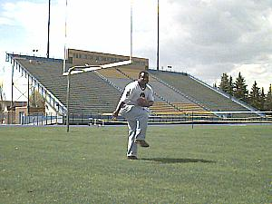

Viking Stadium

Viking Stadium is home to the Ricks College football team. The Vikings are usually ranked in the top ten for junior college football programs. The stadium is also used for many other student activities.
Viking stadium on a Saturday afternoon!